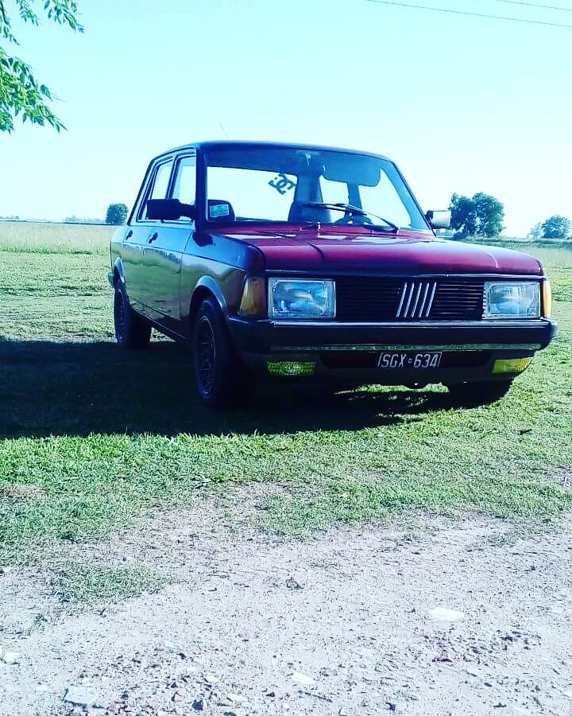

Somos un taller de reparaciones en general, arreglamos, pintamos, bajamos, subimos, si somos capaces lo hacemos!!
Realizamos:
Alineacion
Cambio de juntas de escape
Cambio de juntas en tapas de valbulas
Cambio de homocinetica
Cambio de aceite y filtros
Correcion de bomba de frenos
Cambio de amortiguadores, espirales y casoletas
Cambio de camisas y pistones
Control de tren delantero
Cambio de precaps
Cambio de bujias
Cambios de bombas de agua
Cambios de botadores hidraulicos
Controles para revisión técnica
Servis completo
Limpieza de motor
Puesta a punto de distribucion, encendido
Reparamos bujes de selectoras de cambio
